← 返回阅读库 · 原论文目录
论文讲解阅读文档 · 论文精读 · v234
何恺明进军《行测》领域！ AI已超人类平均水平！？
视频时长 00:13:15；讲解文字 4,061 字符；提取讲解画面 251 张。按视频原顺序阅读，每段文字保留时间戳。
文字来自整段视频的自动语音转写，按自然停顿分段，并与 PPT / 论文页面 / 演示画面对齐。未将讲解压缩为摘要；术语、数字和口述公式请结合画面及原论文核对。 阅读稿已校正规范部分明确术语误识别；原始逐字稿和每处修改记录另行保留。
讲解画面为源视频截图（640×360），不是可编辑 PPT 文件。全片按每秒 2 帧扫描内容变化，逐步展开页保留；连续动画保留代表画面。清晰度受源视频限制。
下载完整资料包 · 含离线 HTML、PDF、Word、全部 PPT 画面和字幕。
原论文与材料
ARC Is a Vision Problem! · 下载完整 PDF（17 页）
按时间阅读
00:00:00–00:00:04 · 画面 001
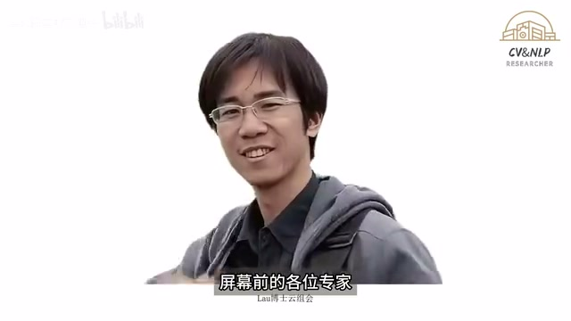
00:00:00–00:00:04 · 画面 001你目前的各位专家听说过 ARC 吗？如果没有，那你肯定听过行测。没错，那个让整个 AI 领域都为之瞩目的男人，21 世纪单篇论文被引用次数最多的学者何恺明开始研究行测了。这一次他的目标只指行测中最难的题型图形推理，论文标题直击核心 ARC is a vision problem。
00:00:04–00:00:08 · 画面 002
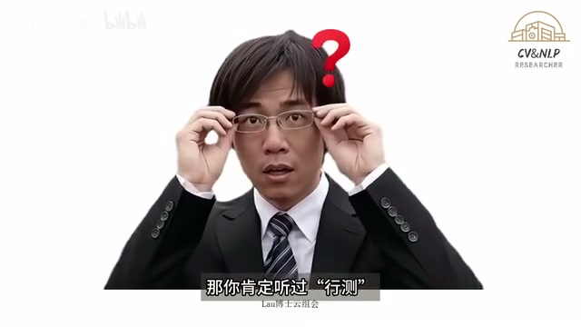
00:00:04–00:00:08 · 画面 00200:00:08–00:00:12 · 画面 003
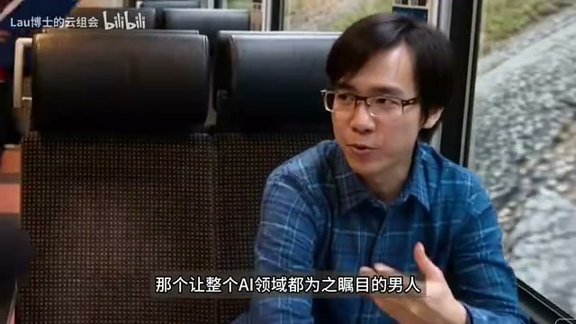
00:00:08–00:00:12 · 画面 00300:00:12–00:00:16 · 画面 004
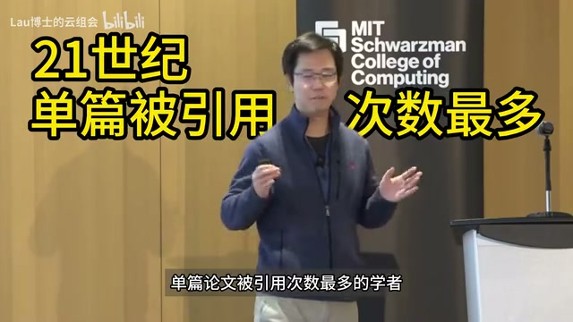
00:00:12–00:00:16 · 画面 00400:00:16–00:00:19 · 画面 005
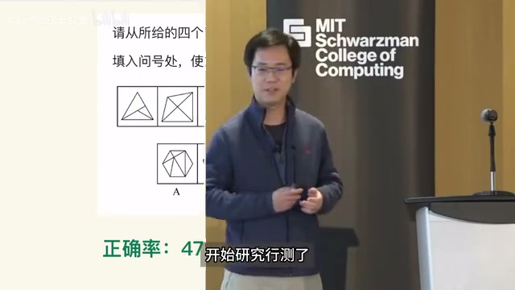
00:00:16–00:00:19 · 画面 00500:00:19–00:00:21 · 画面 006
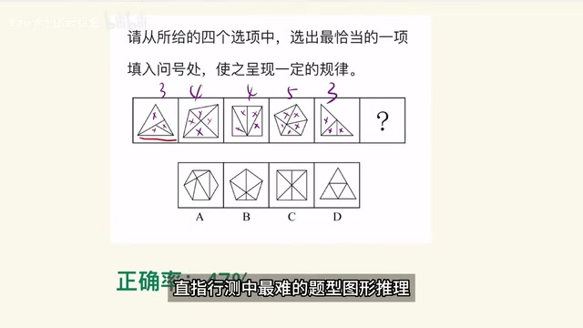
00:00:19–00:00:21 · 画面 00600:00:21–00:00:23 · 画面 007
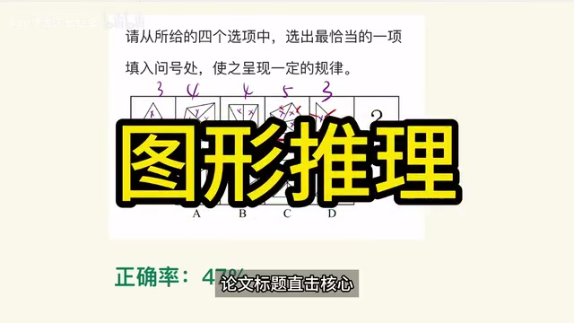
00:00:21–00:00:23 · 画面 00700:00:23–00:00:25 · 画面 008
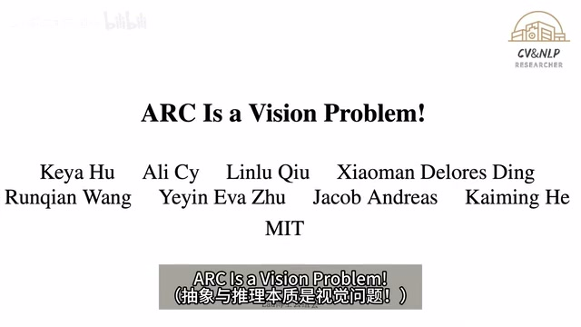
00:00:23–00:00:25 · 画面 00800:00:25–00:00:27 · 画面 009
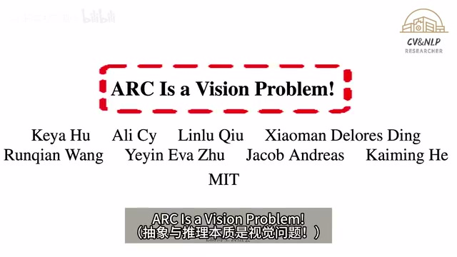
00:00:25–00:00:27 · 画面 009他将 ARC 任务重新定义为图像到图像的翻译问题，用原生的视觉 Transformer，仅依赖 ARC 数据集从零开始训练，就实现了 60.4%的 ARC1 的准确率，直逼人类平均水平。接下来十分钟，我们将猜解何恺明团队如何以视觉为核心突破图像推理的关键瓶颈，云组会论文精读系列图像推理新范式。
00:00:27–00:00:29 · 画面 010
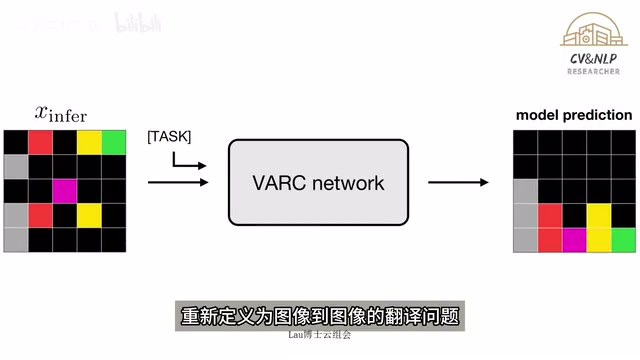
00:00:27–00:00:29 · 画面 01000:00:29–00:00:31 · 画面 011
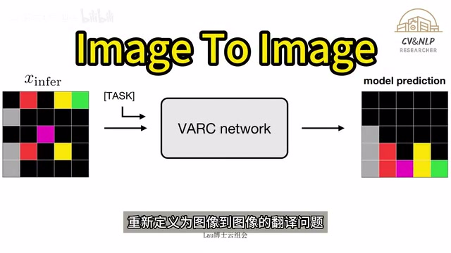
00:00:29–00:00:31 · 画面 01100:00:31–00:00:35 · 画面 012
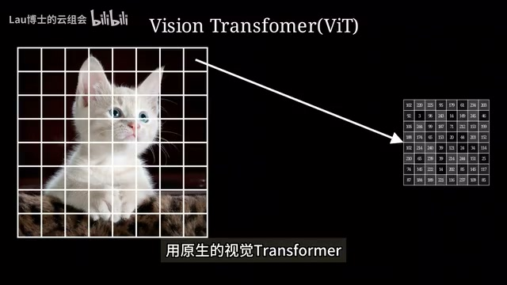
00:00:31–00:00:35 · 画面 01200:00:35–00:00:38 · 画面 013
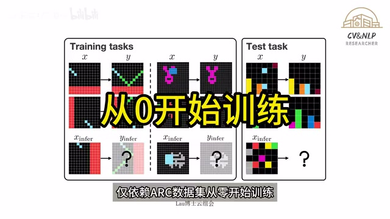
00:00:35–00:00:38 · 画面 01300:00:38–00:00:40 · 画面 014
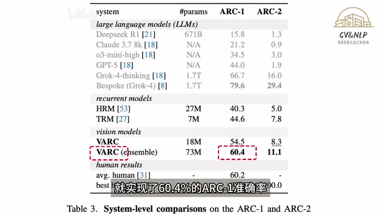
00:00:38–00:00:40 · 画面 01400:00:40–00:00:44 · 画面 015
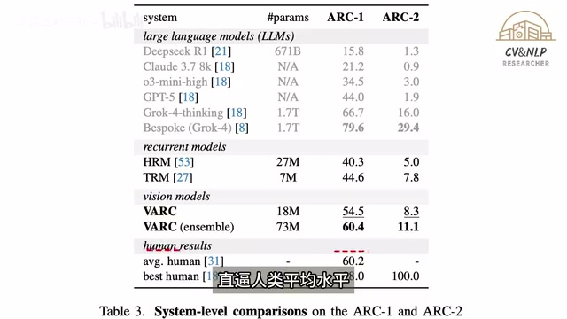
00:00:40–00:00:44 · 画面 01500:00:44–00:00:48 · 画面 016
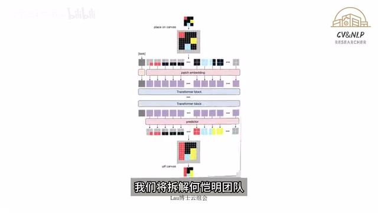
00:00:44–00:00:48 · 画面 01600:00:48–00:00:52 · 画面 017
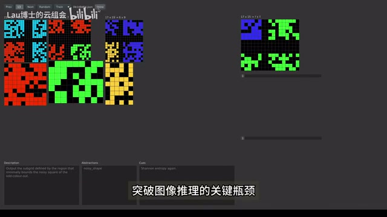
00:00:48–00:00:52 · 画面 01700:00:52–00:00:56 · 画面 018
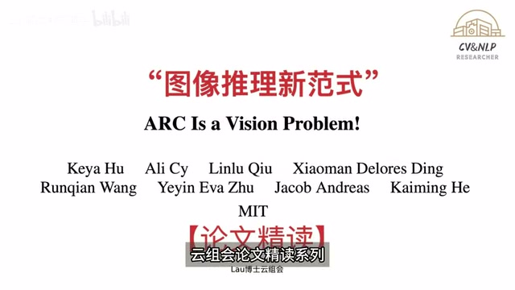
00:00:52–00:00:56 · 画面 018VARC 在正式进入解读前，屏幕前的各位专家不要吝啬您手里的点赞和投币，这对我们真的很有帮助。OK ，严谨起见，这里我们先对 ARC 的定义做一个完整的解释。
00:00:56–00:01:00 · 画面 019
00:00:56–00:01:00 · 画面 01900:01:00–00:01:02 · 画面 020
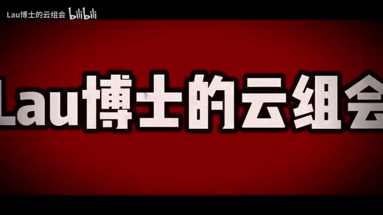
00:01:00–00:01:02 · 画面 02000:01:02–00:01:05 · 画面 021
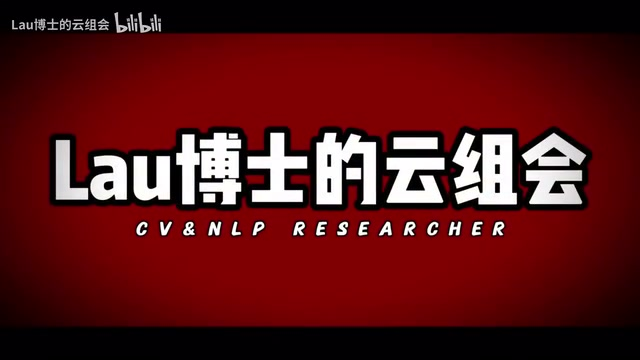
00:01:02–00:01:05 · 画面 02100:01:05–00:01:06 · 画面 022
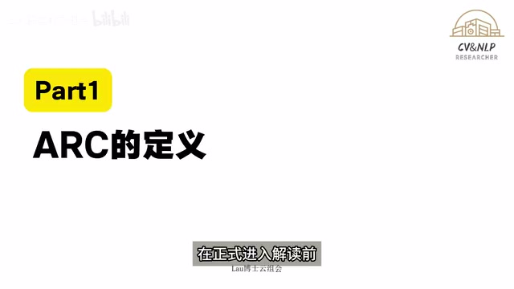
00:01:05–00:01:06 · 画面 02200:01:06–00:01:11 · 画面 023
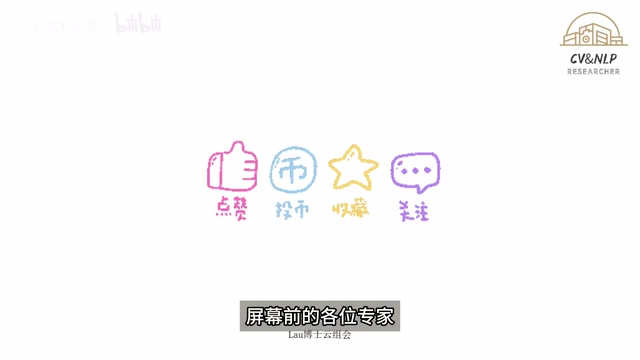
00:01:06–00:01:11 · 画面 02300:01:11–00:01:12 · 画面 024
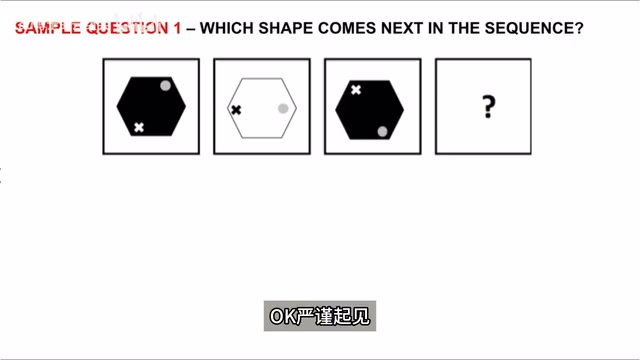
00:01:11–00:01:12 · 画面 02400:01:12–00:01:15 · 画面 025
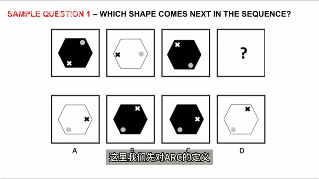
00:01:12–00:01:15 · 画面 02500:01:15–00:01:16 · 画面 026
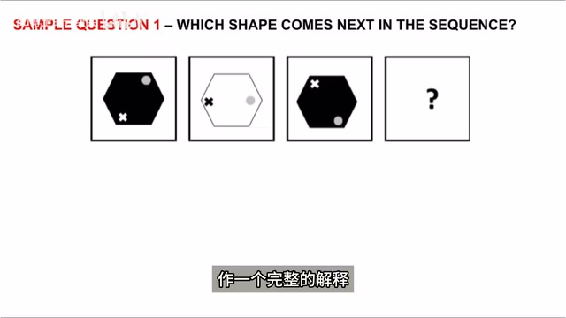
00:01:15–00:01:16 · 画面 026ARC 是围绕图像展开的闭环视觉任务，输入是图像，需要学习规则藏在图像的视觉观念里，而最终要求模型输出的必须是符合规则的完整图像。接下来我们以原文图 3 训练集部分完整的拆解其从输入到输出的全流程，首先是任务的形式。
00:01:16–00:01:20 · 画面 027
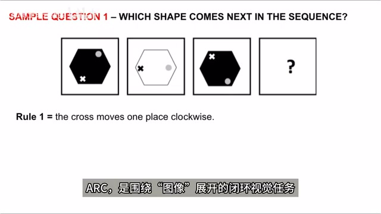
00:01:16–00:01:20 · 画面 02700:01:20–00:01:24 · 画面 028
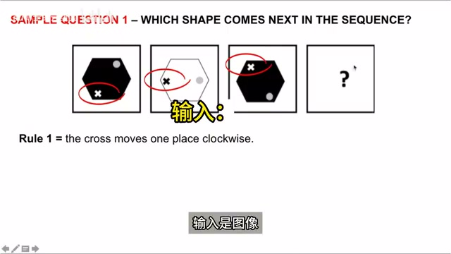
00:01:20–00:01:24 · 画面 02800:01:24–00:01:28 · 画面 029
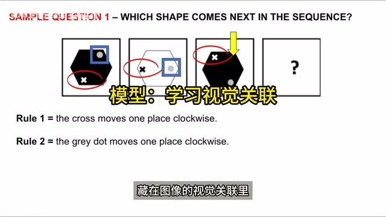
00:01:24–00:01:28 · 画面 02900:01:28–00:01:31 · 画面 030
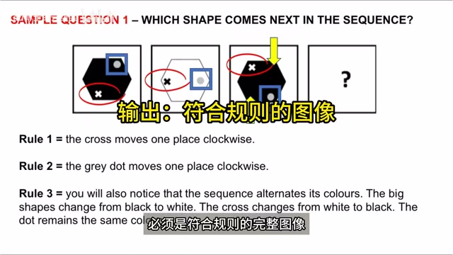
00:01:28–00:01:31 · 画面 03000:01:31–00:01:35 · 画面 031
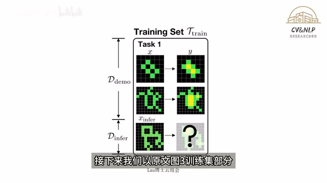
00:01:31–00:01:35 · 画面 03100:01:35–00:01:37 · 画面 032
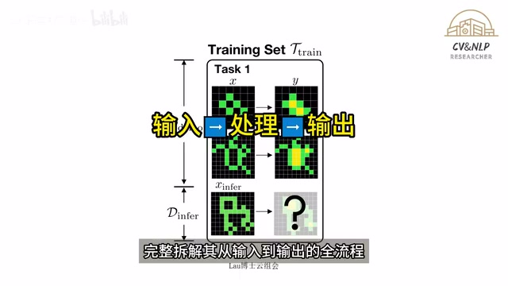
00:01:35–00:01:37 · 画面 03200:01:37–00:01:40 · 画面 033
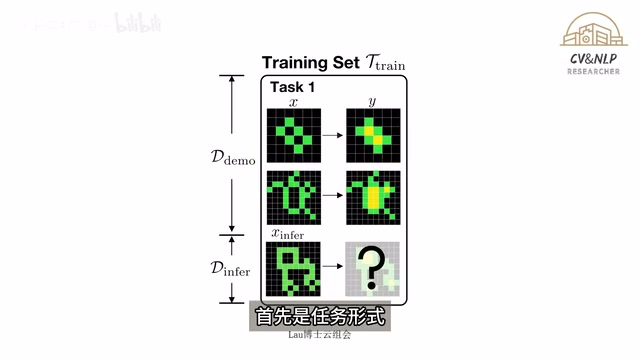
00:01:37–00:01:40 · 画面 033每个 ARC 的任务都有演示样本和待求解输入构成，所有的信息均以彩色网格图像呈现，类似像素化，每个格子对应一种颜色，没有任何的文字说明或者是公式提示。接下来看两个演示样本。
00:01:40–00:01:43 · 画面 034
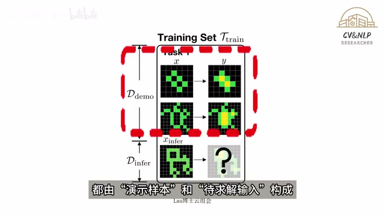
00:01:40–00:01:43 · 画面 03400:01:43–00:01:45 · 画面 035
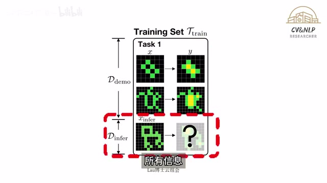
00:01:43–00:01:45 · 画面 03500:01:45–00:01:49 · 画面 036
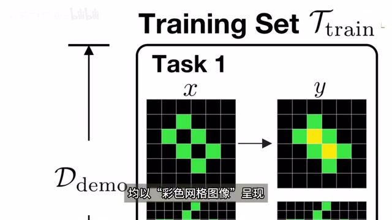
00:01:45–00:01:49 · 画面 03600:01:49–00:01:54 · 画面 037
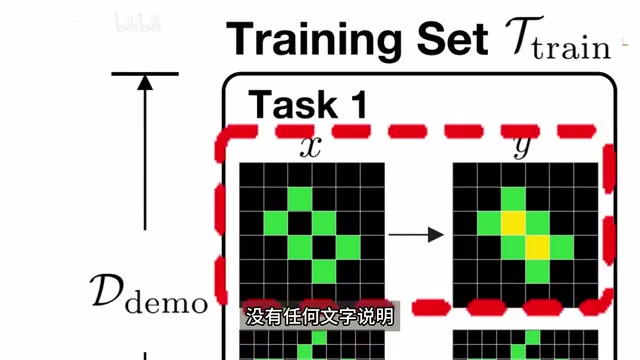
00:01:49–00:01:54 · 画面 03700:01:54–00:01:55 · 画面 038
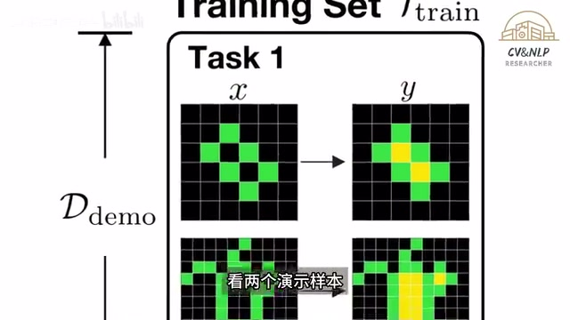
00:01:54–00:01:55 · 画面 03800:01:55–00:01:57 · 画面 039
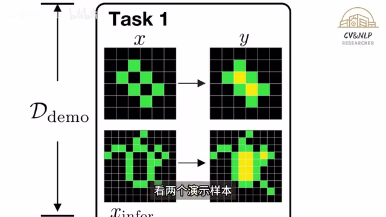
00:01:55–00:01:57 · 画面 039演示样本 1 输入是 6x6 的网格图像左边的 X 的部分除了第一行和最后一行均为黑色方块其他都是带有绿色的方块而 Y 是由黑色、绿色和黄色的方块构成黑色和绿色的方块位置与 X 一致而黄色的方块刚好处于绿色方块之中演示样本 2 也是一样被绿色方块包围的区域由黄色方块填充是不是非常简单?
00:01:57–00:02:01 · 画面 040
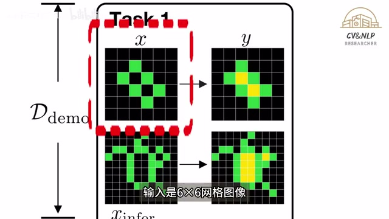
00:01:57–00:02:01 · 画面 04000:02:01–00:02:05 · 画面 041
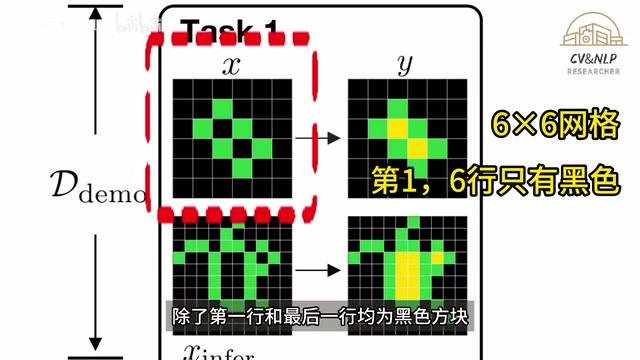
00:02:01–00:02:05 · 画面 04100:02:05–00:02:06 · 画面 042
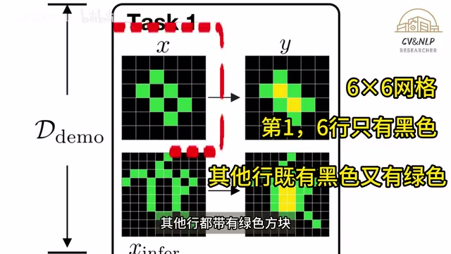
00:02:05–00:02:06 · 画面 04200:02:06–00:02:08 · 画面 043
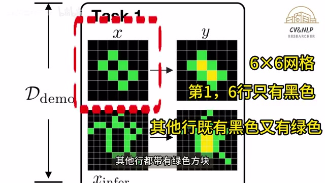
00:02:06–00:02:08 · 画面 04300:02:08–00:02:12 · 画面 044
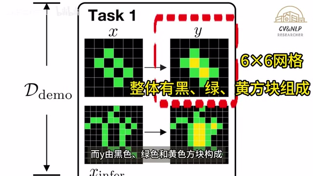
00:02:08–00:02:12 · 画面 04400:02:12–00:02:13 · 画面 045
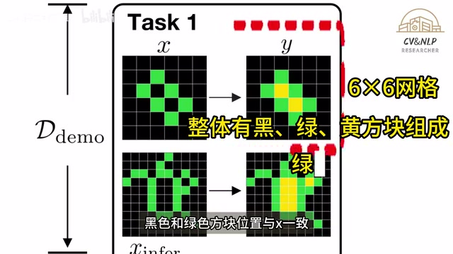
00:02:12–00:02:13 · 画面 04500:02:13–00:02:15 · 画面 046
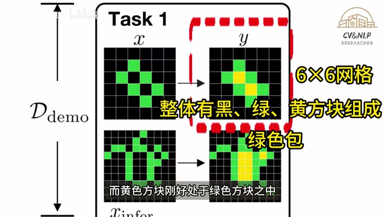
00:02:13–00:02:15 · 画面 04600:02:15–00:02:18 · 画面 047
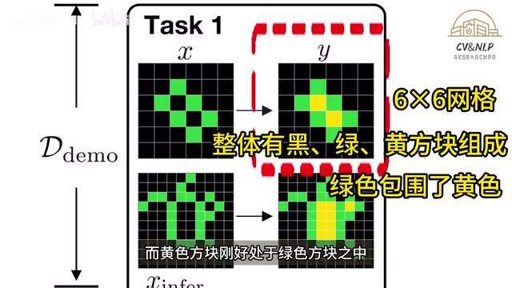
00:02:15–00:02:18 · 画面 04700:02:18–00:02:22 · 画面 048
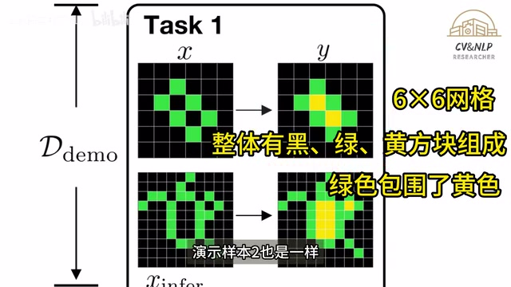
00:02:18–00:02:22 · 画面 04800:02:22–00:02:25 · 画面 049
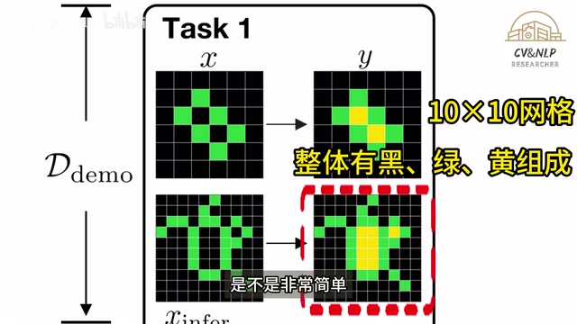
00:02:22–00:02:25 · 画面 049需要预测的任务想必不用多说了，此时模型需要做的不是用文字描述在绿色的方块包围中补全黄色的方块，而是直接生成一幅实诚实的网格图像，将空白的区域按演示样本的规律补全，最终输出在绿色包围圈带有黄色的图案。从这个实例当中我们能清晰的提炼出 ARC 任务的三个核心特征。
00:02:25–00:02:30 · 画面 050
00:02:25–00:02:30 · 画面 05000:02:30–00:02:31 · 画面 051
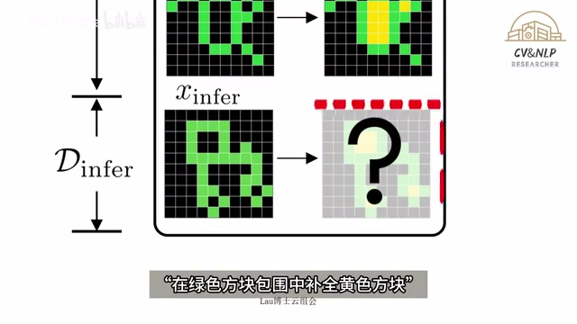
00:02:30–00:02:31 · 画面 05100:02:31–00:02:34 · 画面 052
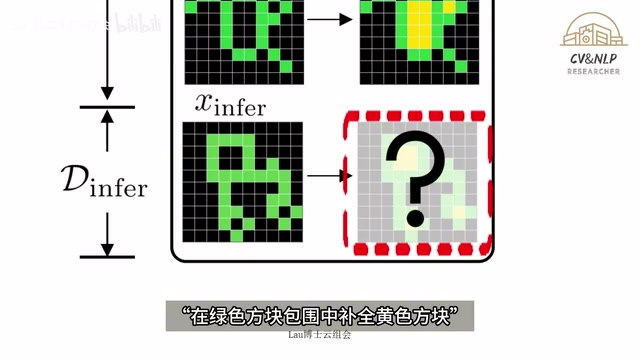
00:02:31–00:02:34 · 画面 05200:02:34–00:02:38 · 画面 053
00:02:34–00:02:38 · 画面 05300:02:38–00:02:42 · 画面 054
00:02:38–00:02:42 · 画面 05400:02:42–00:02:44 · 画面 055
00:02:42–00:02:44 · 画面 05500:02:44–00:02:45 · 画面 056
00:02:44–00:02:45 · 画面 05600:02:45–00:02:47 · 画面 057
00:02:45–00:02:47 · 画面 05700:02:47–00:02:51 · 画面 058
00:02:47–00:02:51 · 画面 058一、信息载体为一输入规则线索，输出的载体都是图像，不存在其他形式的中介。二、规则视觉化需要抽象的规则必须通过观察图像的颜色位置关联才能总结，无法脱离视觉独立存在。三、输出形态固定，评判模型是否正确的唯一标准是输出图像是否与人类按规则生成的图像完全一致。
00:02:51–00:02:53 · 画面 059
00:02:51–00:02:53 · 画面 05900:02:53–00:02:54 · 画面 060
00:02:53–00:02:54 · 画面 06000:02:54–00:02:58 · 画面 061
00:02:54–00:02:58 · 画面 06100:02:58–00:02:59 · 画面 062
00:02:58–00:02:59 · 画面 06200:02:59–00:03:01 · 画面 063
00:02:59–00:03:01 · 画面 06300:03:01–00:03:04 · 画面 064
00:03:01–00:03:04 · 画面 06400:03:04–00:03:05 · 画面 065
00:03:04–00:03:05 · 画面 06500:03:05–00:03:07 · 画面 066
00:03:05–00:03:07 · 画面 06600:03:07–00:03:10 · 画面 067
00:03:07–00:03:10 · 画面 06700:03:10–00:03:12 · 画面 068
00:03:10–00:03:12 · 画面 06800:03:12–00:03:14 · 画面 069
00:03:12–00:03:14 · 画面 06900:03:14–00:03:17 · 画面 070
00:03:14–00:03:17 · 画面 07000:03:17–00:03:18 · 画面 071
00:03:17–00:03:18 · 画面 07100:03:18–00:03:21 · 画面 072
00:03:18–00:03:21 · 画面 072简而言之，ARC 任务的本质是图像推理，让 AI 像人类一样看懂规律画出结果。接下来我们先来看两种传统的 ARC 解决方式，看看它们是如何实现又潜在着哪些缺陷。首先是基于 LLM 大语言模型的方法，这也是最好理解且最常用的方法。这类方法的核心逻辑是图像转文本。
00:03:21–00:03:24 · 画面 073
00:03:21–00:03:24 · 画面 07300:03:24–00:03:25 · 画面 074
00:03:24–00:03:25 · 画面 07400:03:25–00:03:28 · 画面 075
00:03:25–00:03:28 · 画面 07500:03:28–00:03:31 · 画面 076
00:03:28–00:03:31 · 画面 07600:03:31–00:03:35 · 画面 077
00:03:31–00:03:35 · 画面 07700:03:35–00:03:37 · 画面 078
00:03:35–00:03:37 · 画面 07800:03:37–00:03:46 · 画面 079
00:03:37–00:03:46 · 画面 07900:03:46–00:03:50 · 画面 080
00:03:46–00:03:50 · 画面 080到文本学关联再到文本再转图像。
00:03:50–00:03:53 · 画面 081
00:03:50–00:03:53 · 画面 081把图像推理问题转化为语言推理问题，第一步图像转文本算法会将网格图像转化为冗长的坐标颜色文本序列，比如将演示样本 1 的输入描述为 6x6 的网格，第一行第一列黑，第一行第二列黑，等等等，第六行第六列黑。第二步文本序列的建模，让千亿级参数的 LLM 学习输入文本到输出文本的映射关系。
00:03:53–00:03:55 · 画面 082
00:03:53–00:03:55 · 画面 08200:03:55–00:03:56 · 画面 083
00:03:55–00:03:56 · 画面 08300:03:56–00:04:00 · 画面 084
00:03:56–00:04:00 · 画面 08400:04:00–00:04:01 · 画面 085
00:04:00–00:04:01 · 画面 08500:04:01–00:04:02 · 画面 086
00:04:01–00:04:02 · 画面 08600:04:02–00:04:06 · 画面 087
00:04:02–00:04:06 · 画面 08700:04:06–00:04:10 · 画面 088
00:04:06–00:04:10 · 画面 08800:04:10–00:04:12 · 画面 089
00:04:10–00:04:12 · 画面 08900:04:12–00:04:16 · 画面 090
00:04:12–00:04:16 · 画面 09000:04:16–00:04:17 · 画面 091
00:04:16–00:04:17 · 画面 09100:04:17–00:04:19 · 画面 092
00:04:17–00:04:19 · 画面 092试图通过文本序列的关联猜测视觉规则，输出则描述为 6×6 网格，第三行第三列黄，第三行第四列绿，等等等。在这个过程当中，图像中的黄色方块被绿色方块包围这一核心规则的线索被彻底的割裂了。第三步文本到图像的还原将 LM 输出的文本描述再转化为网格图像作为了最终的结果。我想各位专家肯定发现了。
00:04:19–00:04:21 · 画面 093
00:04:19–00:04:21 · 画面 09300:04:21–00:04:25 · 画面 094
00:04:21–00:04:25 · 画面 09400:04:25–00:04:29 · 画面 095
00:04:25–00:04:29 · 画面 09500:04:29–00:04:30 · 画面 096
00:04:29–00:04:30 · 画面 09600:04:30–00:04:34 · 画面 097
00:04:30–00:04:34 · 画面 09700:04:34–00:04:38 · 画面 098
00:04:34–00:04:38 · 画面 09800:04:38–00:04:42 · 画面 099
00:04:38–00:04:42 · 画面 09900:04:42–00:04:46 · 画面 100
00:04:42–00:04:46 · 画面 10000:04:46–00:04:48 · 画面 101
00:04:46–00:04:48 · 画面 101这种流程的致命缺陷在于它从根本上逃避了图像式连续视觉信息的属性，将二维图像转化为一维的文本，不仅丢掉了画面的空间层次色彩关联这些核心信息，还得靠冗长的描述去还原，更难以还原原本的视觉逻辑。
00:04:48–00:04:51 · 画面 102
00:04:48–00:04:51 · 画面 10200:04:51–00:04:52 · 画面 103
00:04:51–00:04:52 · 画面 10300:04:52–00:04:55 · 画面 104
00:04:52–00:04:55 · 画面 10400:04:55–00:04:58 · 画面 105
00:04:55–00:04:58 · 画面 10500:04:58–00:05:02 · 画面 106
00:04:58–00:05:02 · 画面 10600:05:02–00:05:10 · 画面 107
00:05:02–00:05:10 · 画面 107就像我们正常人做行测中的推理题一样，不可能先把每个像素点的相对位置用文本描述一遍，再仅通过文字推理出要预测的图片。实验显示这类基于 LLM 的方法，即便使用了千亿级的参数模型。
00:05:10–00:05:11 · 画面 108
00:05:10–00:05:11 · 画面 10800:05:11–00:05:13 · 画面 109
00:05:11–00:05:13 · 画面 10900:05:13–00:05:15 · 画面 110
00:05:13–00:05:15 · 画面 11000:05:15–00:05:17 · 画面 111
00:05:15–00:05:17 · 画面 11100:05:17–00:05:20 · 画面 112
00:05:17–00:05:20 · 画面 11200:05:20–00:05:29 · 画面 113
00:05:20–00:05:29 · 画面 113ARC1 的准确率也仅能达到 44%左右，这也解释了为什么很多消费级 AI 产品在视觉任务上仍有优化空间，比如 Gemini 2.5 Pro 的图像描述功能容易混淆空间方位，AI 绘画工具偶尔会出现图形元素错位，而搭载先进纯视觉 Transformer 的扫地机器人反而效果很好，例如石头云鲸科沃斯等产品。
00:05:29–00:05:33 · 画面 114
00:05:29–00:05:33 · 画面 11400:05:33–00:05:37 · 画面 115
00:05:33–00:05:37 · 画面 11500:05:37–00:05:41 · 画面 116
00:05:37–00:05:41 · 画面 11600:05:41–00:05:45 · 画面 117
00:05:41–00:05:45 · 画面 11700:05:45–00:05:49 · 画面 118
00:05:45–00:05:49 · 画面 11800:05:49–00:05:53 · 画面 119
00:05:49–00:05:53 · 画面 119凭借直接的图像映射逻辑能精准的完成物体识别与动作执行从这类消费端产品的表现就能直观的感受到图像到图像的推理方式的优势诶,看到这个标题你是不是觉得有些熟悉?RNN 算是深度学习时代的元老了这里给不熟悉的教授快速介绍一下 RNN 是一种通过引入循环结构专门处理序列数据的神经网络模型
00:05:53–00:05:57 · 画面 120
00:05:53–00:05:57 · 画面 12000:05:57–00:06:01 · 画面 121
00:05:57–00:06:01 · 画面 12100:06:01–00:06:05 · 画面 122
00:06:01–00:06:05 · 画面 12200:06:05–00:06:06 · 画面 123
00:06:05–00:06:06 · 画面 12300:06:06–00:06:09 · 画面 124
00:06:06–00:06:09 · 画面 12400:06:09–00:06:13 · 画面 125
00:06:09–00:06:13 · 画面 12500:06:13–00:06:16 · 画面 126
00:06:13–00:06:16 · 画面 12600:06:16–00:06:20 · 画面 127
00:06:16–00:06:20 · 画面 12700:06:20–00:06:21 · 画面 128
00:06:20–00:06:21 · 画面 12800:06:21–00:06:23 · 画面 129
00:06:21–00:06:23 · 画面 129它能够记住历史信息适用于文本、语音和时间序列等任务对于我们本期的 ARC 任务 RNN 的范式的核心目标是把图像输入转化成一维序列模型对该一维序列多步循环迭代来推理出结果再把结果序列还原成图像
00:06:23–00:06:26 · 画面 130
00:06:23–00:06:26 · 画面 13000:06:26–00:06:30 · 画面 131
00:06:26–00:06:30 · 画面 13100:06:30–00:06:34 · 画面 132
00:06:30–00:06:34 · 画面 13200:06:34–00:06:38 · 画面 133
00:06:34–00:06:38 · 画面 13300:06:38–00:06:42 · 画面 134
00:06:38–00:06:42 · 画面 13400:06:42–00:06:46 · 画面 135
00:06:42–00:06:46 · 画面 135然而由于中间过程转换产生了信息损失，本质上仍是对 ARC 视觉本质的背离。我们用一个具体的例子来看这个过程是如何进行的。第一步图像转序列先把 2D 图像转化成 1 维的坐标颜色离散序列，比如将演示样本 1 的 6x6 网格描述为 11 黑 12 黑等等。第二步。
00:06:46–00:06:49 · 画面 136
00:06:46–00:06:49 · 画面 13600:06:49–00:06:52 · 画面 137
00:06:49–00:06:52 · 画面 13700:06:52–00:07:00 · 画面 138
00:06:52–00:07:00 · 画面 13800:07:00–00:07:02 · 画面 139
00:07:00–00:07:02 · 画面 13900:07:02–00:07:03 · 画面 140
00:07:02–00:07:03 · 画面 14000:07:03–00:07:05 · 画面 141
00:07:03–00:07:05 · 画面 14100:07:05–00:07:08 · 画面 142
00:07:05–00:07:08 · 画面 14200:07:08–00:07:12 · 画面 143
00:07:08–00:07:12 · 画面 143循环迭代推理模型通过多步循环迭代逐步逼近规则，RNN 中的坐标颜色序列进行逐一处理，推理出了下一个坐标颜色，最后得到 33 黄，44 黄，其他位置的颜色保持不变，第三步 序列转图像的还原
00:07:12–00:07:14 · 画面 144
00:07:12–00:07:14 · 画面 14400:07:14–00:07:16 · 画面 145
00:07:14–00:07:16 · 画面 14500:07:16–00:07:17 · 画面 146
00:07:16–00:07:17 · 画面 14600:07:17–00:07:19 · 画面 147
00:07:17–00:07:19 · 画面 14700:07:19–00:07:20 · 画面 148
00:07:19–00:07:20 · 画面 14800:07:20–00:07:24 · 画面 149
00:07:20–00:07:24 · 画面 14900:07:24–00:07:25 · 画面 150
00:07:24–00:07:25 · 画面 15000:07:25–00:07:29 · 画面 151
00:07:25–00:07:29 · 画面 15100:07:29–00:07:33 · 画面 152
00:07:29–00:07:33 · 画面 152将最终迭代稳定后的一维序列按原拆解顺序反向映射为 2D 图像，可以看到 RNN 的范式仍延续着图像转化为离散 Token 序列的处理思路，选择以一维序列为核心载体开展推理，本质上仍是对 ARC 视觉本质的背离。而何恺明团队提出的 VARC 框架正是针对这一错配给出了破局思路。
00:07:33–00:07:35 · 画面 153
00:07:33–00:07:35 · 画面 15300:07:35–00:07:51 · 画面 154
00:07:35–00:07:51 · 画面 15400:07:51–00:07:54 · 画面 155
00:07:51–00:07:54 · 画面 15500:07:54–00:07:58 · 画面 156
00:07:54–00:07:58 · 画面 156回归输入图像到输出图像的视觉本质，没有中间的转换过程，让模型直接学习图像到图像的映射关系。那接下来我们就正式进入 VARC 的具体设计，看看它如何将输入图像直接到输出图像的思路落地为高效的技术方案，让 AI 拿捏行测中最难的题型。首先我们需要充分了解 ARC 任务的训练集与测试集的定义
00:07:58–00:08:02 · 画面 157
00:07:58–00:08:02 · 画面 15700:08:02–00:08:06 · 画面 158
00:08:02–00:08:06 · 画面 15800:08:06–00:08:10 · 画面 159
00:08:06–00:08:10 · 画面 15900:08:10–00:08:18 · 画面 160
00:08:10–00:08:18 · 画面 16000:08:18–00:08:20 · 画面 161
00:08:18–00:08:20 · 画面 16100:08:20–00:08:22 · 画面 162
00:08:20–00:08:22 · 画面 16200:08:22–00:08:24 · 画面 163
00:08:22–00:08:24 · 画面 16300:08:24–00:08:26 · 画面 164
00:08:24–00:08:26 · 画面 16400:08:26–00:08:27 · 画面 165
00:08:26–00:08:27 · 画面 165这与传统的视觉任务的定义存在的差别，具体来说 ARC 任务的训练集测试集中的 Demo 的部分均可以用于训练，而训练集和测试集的 Inference 的部分则均用于推理验证。是不是有点懵？为什么测试集的 Demo 也可以用于训练呢？它和训练集的 Demo 在训练上有什么差异？我们一步步来拆解。
00:08:27–00:08:28 · 画面 166
00:08:27–00:08:28 · 画面 16600:08:28–00:08:33 · 画面 167
00:08:28–00:08:33 · 画面 16700:08:33–00:08:34 · 画面 168
00:08:33–00:08:34 · 画面 16800:08:34–00:08:38 · 画面 169
00:08:34–00:08:38 · 画面 16900:08:38–00:08:42 · 画面 170
00:08:38–00:08:42 · 画面 17000:08:42–00:08:44 · 画面 171
00:08:42–00:08:44 · 画面 17100:08:44–00:08:46 · 画面 172
00:08:44–00:08:46 · 画面 17200:08:46–00:08:47 · 画面 173
00:08:46–00:08:47 · 画面 17300:08:47–00:08:49 · 画面 174
00:08:47–00:08:49 · 画面 17400:08:49–00:08:55 · 画面 175
00:08:49–00:08:55 · 画面 175VARC 有两个训练阶段，这两个训练阶段分别叫离线训练阶段和测试时训练阶段。首先是离线训练阶段，这个阶段训练所用到的数据集是数量较多的 Training Set Demo，更新了全部核心参数。换句话说，这就是 Pre-Training 环节，让模型掌握解决 ARC 任务所需的通用视觉推理基础能力
00:08:55–00:08:57 · 画面 176
00:08:55–00:08:57 · 画面 17600:08:57–00:08:59 · 画面 177
00:08:57–00:08:59 · 画面 17700:08:59–00:09:03 · 画面 178
00:08:59–00:09:03 · 画面 17800:09:03–00:09:08 · 画面 179
00:09:03–00:09:08 · 画面 17900:09:08–00:09:09 · 画面 180
00:09:08–00:09:09 · 画面 18000:09:09–00:09:14 · 画面 181
00:09:09–00:09:14 · 画面 18100:09:14–00:09:15 · 画面 182
00:09:14–00:09:15 · 画面 182不针对任何单个测试任务，这个过程就像是用 ImageNet 对 ResNet 进行预训练。在模型学会什么是 ARC 以后就到了测试时训练阶段，这阶段训练所用到的数据集是数量较少且未见过的 Test Set Demo，告知模型要学具体的 Task 的类型。
00:09:15–00:09:19 · 画面 183
00:09:15–00:09:19 · 画面 18300:09:19–00:09:22 · 画面 184
00:09:19–00:09:22 · 画面 18400:09:22–00:09:26 · 画面 185
00:09:22–00:09:26 · 画面 18500:09:26–00:09:28 · 画面 186
00:09:26–00:09:28 · 画面 18600:09:28–00:09:31 · 画面 187
00:09:28–00:09:31 · 画面 18700:09:31–00:09:36 · 画面 188
00:09:31–00:09:36 · 画面 188例如论文的图商当中 Test Set Demo 就有 400 种不同类型的图像推理问题，每个测试任务都是一个微型的下游任务，用该任务少量的演示样本来微调模型，让模型快速学会该任务的独特规则，相当于根据不同的下游任务进行微调训练。这个过程就像是用预训练以后的 ResNet 针对每个具体的下游任务，比如目标检测。
00:09:36–00:09:37 · 画面 189
00:09:36–00:09:37 · 画面 18900:09:37–00:09:42 · 画面 190
00:09:37–00:09:42 · 画面 19000:09:42–00:09:43 · 画面 191
00:09:42–00:09:43 · 画面 19100:09:43–00:09:48 · 画面 192
00:09:43–00:09:48 · 画面 19200:09:48–00:09:49 · 画面 193
00:09:48–00:09:49 · 画面 19300:09:49–00:09:53 · 画面 194
00:09:49–00:09:53 · 画面 19400:09:53–00:09:54 · 画面 195
00:09:53–00:09:54 · 画面 19500:09:54–00:09:56 · 画面 196
00:09:54–00:09:56 · 画面 19600:09:56–00:10:00 · 画面 197
00:09:56–00:10:00 · 画面 19700:10:00–00:10:07 · 画面 198
00:10:00–00:10:07 · 画面 198目标分割等，来用该任务少量的标注的样本微调预训练模型，快速的适配该任务的具体需求。我们现在已经知道什么是两阶段的训练，那模型具体训练和推理过程又是怎样呢？我们先看原文的架构图，基于 VIT 的情况下，输入会被放在一个灰色的画布上，接着进行切块并进入到 VIT 中进行预测，最后得到预测结果
00:10:07–00:10:12 · 画面 199
00:10:07–00:10:12 · 画面 19900:10:12–00:10:15 · 画面 200
00:10:12–00:10:15 · 画面 20000:10:15–00:10:19 · 画面 201
00:10:15–00:10:19 · 画面 20100:10:19–00:10:23 · 画面 202
00:10:19–00:10:23 · 画面 20200:10:23–00:10:26 · 画面 203
00:10:23–00:10:26 · 画面 20300:10:26–00:10:28 · 画面 204
00:10:26–00:10:28 · 画面 20400:10:28–00:10:30 · 画面 205
00:10:28–00:10:30 · 画面 20500:10:30–00:10:32 · 画面 206
00:10:30–00:10:32 · 画面 20600:10:32–00:10:35 · 画面 207
00:10:32–00:10:35 · 画面 207按直觉来说，到这里就应该结束了。细心的同学可能已经发现了，在画布被分块以后，左手边还有一个 Task Token，让模型识别这是旋转、平移还是其他的变化任务，也就是刚刚提到的不同的下游任务。实际上原文的损失函数也有提及这一点，公式中的 XI 就是图像的输入，而 T 就是 Task Token，两者共同构成模型的输入
00:10:35–00:10:39 · 画面 208
00:10:35–00:10:39 · 画面 20800:10:39–00:10:43 · 画面 209
00:10:39–00:10:43 · 画面 20900:10:43–00:10:47 · 画面 210
00:10:43–00:10:47 · 画面 21000:10:47–00:10:48 · 画面 211
00:10:47–00:10:48 · 画面 21100:10:48–00:10:51 · 画面 212
00:10:48–00:10:51 · 画面 21200:10:51–00:10:55 · 画面 213
00:10:51–00:10:55 · 画面 21300:10:55–00:10:57 · 画面 214
00:10:55–00:10:57 · 画面 21400:10:57–00:11:00 · 画面 215
00:10:57–00:11:00 · 画面 21500:11:00–00:11:02 · 画面 216
00:11:00–00:11:02 · 画面 216这个过程就像我们自己在做图像推理时一样，我们都是要先看一种特定类型的 ARC 问题中的两三个案例，然后再对问题进行推理。这个 Task Token 就是具体到某一种特定的类型。各位教授觉得这种设计思路如何呢？是不是非常之巧妙？那接下来我们就进入到实验部分
00:11:02–00:11:03 · 画面 217
00:11:02–00:11:03 · 画面 21700:11:03–00:11:07 · 画面 218
00:11:03–00:11:07 · 画面 21800:11:07–00:11:09 · 画面 219
00:11:07–00:11:09 · 画面 21900:11:09–00:11:11 · 画面 220
00:11:09–00:11:11 · 画面 22000:11:11–00:11:12 · 画面 221
00:11:11–00:11:12 · 画面 22100:11:12–00:11:13 · 画面 222
00:11:12–00:11:13 · 画面 22200:11:13–00:11:17 · 画面 223
00:11:13–00:11:17 · 画面 22300:11:17–00:11:21 · 画面 224
00:11:17–00:11:21 · 画面 22400:11:21–00:11:24 · 画面 225
00:11:21–00:11:24 · 画面 22500:11:24–00:11:25 · 画面 226
00:11:24–00:11:25 · 画面 226我们先来看看同样作为基础架构在 ARC 任务上到底是卷积还是 Transformer 更强呢?何恺明大佬能不能 Make CNN Great Again 呢?结果显示 VIT 的 ARC1 的准确率达到了 54.5%交同规模的 UNET 高出了 7 个百分点
00:11:25–00:11:29 · 画面 227
00:11:25–00:11:29 · 画面 22700:11:29–00:11:33 · 画面 228
00:11:29–00:11:33 · 画面 22800:11:33–00:11:37 · 画面 229
00:11:33–00:11:37 · 画面 22900:11:37–00:11:42 · 画面 230
00:11:37–00:11:42 · 画面 23000:11:42–00:11:46 · 画面 231
00:11:42–00:11:46 · 画面 23100:11:46–00:11:49 · 画面 232
00:11:46–00:11:49 · 画面 232核心原因是 ViT 的自注意力机制能够更好地捕捉到全局图案的延续规律而 U-Net 的卷积结构在处理大面积图案生成时存在局限接下来我们直接进入到最关键的对比这种直接从图像到图像的方法和其他方向的 SOTA 方法相比到底有没有优势呢?
00:11:49–00:11:51 · 画面 233
00:11:49–00:11:51 · 画面 23300:11:51–00:11:52 · 画面 234
00:11:51–00:11:52 · 画面 23400:11:52–00:11:55 · 画面 235
00:11:52–00:11:55 · 画面 23500:11:55–00:11:59 · 画面 236
00:11:55–00:11:59 · 画面 23600:11:59–00:12:11 · 画面 237
00:11:59–00:12:11 · 画面 237结果显示 18N 的参数量的 VARC 的单模型的准确率高达了 54.5%超越了不少主流 LM 的方法同时远超传统从头训练的基于 RNN 的循环型 TRM 与 HRMViT 加 U-Net 集成后的准确率升至 60.4%与人类的平均水平持平这个表现证明了模型学到了视觉先验具有通用性
00:12:11–00:12:15 · 画面 238
00:12:11–00:12:15 · 画面 23800:12:15–00:12:18 · 画面 239
00:12:15–00:12:18 · 画面 23900:12:18–00:12:19 · 画面 240
00:12:18–00:12:19 · 画面 24000:12:19–00:12:23 · 画面 241
00:12:19–00:12:23 · 画面 24100:12:23–00:12:25 · 画面 242
00:12:23–00:12:25 · 画面 24200:12:25–00:12:31 · 画面 243
00:12:25–00:12:31 · 画面 24300:12:31–00:12:34 · 画面 244
00:12:31–00:12:34 · 画面 24400:12:34–00:12:41 · 画面 245
00:12:34–00:12:41 · 画面 245对比传统方法具有明显的优势。最后屏幕前的各位专家觉得这项研究可以打几分呢？我看完这篇 VARC 之后感觉和前几期讲的同样来自于何恺明团队的 Back to Basics 一脉相承，也是回归本质，去掉中间的步骤，图像推理的准确率更是逼近了人类的水准。或许在不久的将来，继申论之后公务员考试的行测科目也将被 AI 攻克。
00:12:41–00:12:42 · 画面 246
00:12:41–00:12:42 · 画面 24600:12:42–00:12:43 · 画面 247
00:12:42–00:12:43 · 画面 24700:12:43–00:13:09 · 画面 248
00:12:43–00:13:09 · 画面 248以上就是本期视频的全部内容。如果你还没有关注我们的频道，一定记得点个关注，欢迎成为云组会的一员
00:13:09–00:13:13 · 画面 249
00:13:09–00:13:13 · 画面 24900:13:13–00:13:15 · 画面 250
00:13:13–00:13:15 · 画面 25000:13:15–00:13:15 · 画面 251
00:13:15–00:13:15 · 画面 251转写与来源说明 · 0 个自动复核提示
保留 33 个原始语音片段，0 个片段触发自动复核提示。提示仅用于定位可能的术语、重复或识别问题，不等于已确认错误。
讲解画面为源视频截图（640×360），不是可编辑 PPT 文件。全片按每秒 2 帧扫描内容变化，逐步展开页保留；连续动画保留代表画面。清晰度受源视频限制。
原视频：paper/合集_2026-10-16_论文精读/何恺明进军《行测》领域！ AI已超人类平均水平！？.mp4
SHA-256：9af59e012282d6bb377a66be7aa892251414fe1fe342df494ee31a7591f4c9b4
全文按视频语音与画面制作。原论文可从上方链接下载；完整资料包保留全文、原始逐字稿、字幕和校对记录。